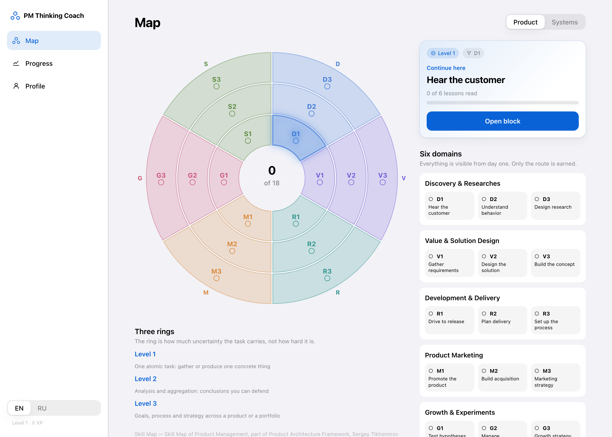

A learning app built from problem statement to a working end-to-end product: a PM skill tree of structured learning blocks and interactive decision scenarios to learn and evaluate your seniority level, on a SwiftUI client with a FastAPI + Postgres backend.

The Map — six domains across three rings, with the recommended next block on the right.
Designed scoring to reward reasoning over answer-picking: rationale and communication carry 60 of 100 points against 25 for the decision itself
Covered 7 competency tracks across three proficiency levels: product sense, analytics, user research, prioritization, execution, communication, and system design
Total of 159 lessons, 36 simulation scenarios, and a 515-term glossary
Implemented an audio overview feature that narrates lessons and coaching feedback for hands-free review
Defined the beta success metrics: activation, time to first value, D7 repeat practice, and feedback usefulness
Work Experience
Rae Health
Product Manager Intern — Bristol, ME — June 2026 to September 2026
Worked on a live clinical wearable platform, defining foundational product metrics and validating growth strategy through data analysis and customer research.
Defined the company's first North Star metric and supporting metric tree (Reach → Activation → Retention → Clinical Engagement)
Analyzed event-level data (85 patients, ~91,000 detection events, 6 months) to compute the product's first measured baseline
Stress-tested the ROI model behind the company's growth strategy: traced each figure to source, formula, or "unverifiable"
Ran 6 customer interviews alongside usability studies to validate hypotheses before committing engineering capacity
Questrom Consulting Lab
Project Manager — Boston, MA — June 2026 to Present
Mapped 150+ back-office systems across 9 departments via 8 stakeholder interviews; built a systems-relationship tool surfacing $700K in projected annual savings from redundant tooling
Led the development of an enterprise AI knowledge assistant and RAG solution while coordinating project execution, technical workstreams, deliverables, and stakeholder alignment
Attract Group
Senior IT Project Manager — Las Vegas, NV — June 2021 to March 2025
Owned discovery to launch for 10+ client products across fintech, marketplace, and healthtech, leading cross-functional teams of up to 15 developers and specialists.
Ran requirements, functional decomposition, and MVP scoping on engagements up to $400K
Owned product and project backlog, including feature prioritization and task estimation — leading to on-time delivery of 90% of projects
Controlled project delivery timelines, roadmaps, and resource allocation to ensure 0% budget loss
Utilized Agile Scrum methodology in 3 large teams to maintain development efficiency
Defined technical specs; aligned architecture with business goals
Served as a mentor for junior managers, providing guidance and support
European American Business Organization
Project Manager Assistant — New York City, NY — September 2019 to March 2020
Spearheaded strategic partnership search, identifying and evaluating potential collaborations. Found and contacted 500+ cold leads
Responded to inquiries related to cross-border market entry, offering insights and guidance for 6 clients
Coordinated and facilitated 10+ B2B and B2C meetings, contributing to business interactions and partnerships
Education
MBA and MS Digital Technology
Boston University, Questrom School of Business — Boston, MA
Expected May 2027 — Relevant Coursework: Digital Product Build, Systems Architecture, Gen AI in Business, Python, SQL, Machine Learning, Deep Learning
BA Economics
Bard College — Annandale-On-Hudson, NY
May 2021
Skills
Product
Discovery & customer interviews, PRDs, roadmapping, RICE prioritization, A/B testing & experiment design, competitive analysis, leading cross-functional teams
Data & AI
SQL, Python (pandas), Tableau, Excel, Amplitude; RAG architecture, LLM evaluation & prompt design, Claude Code, model tradeoffs (latency/cost/quality)
Tools
Jira, Confluence, Figma, Linear; Professional Scrum Master I (PSM I)